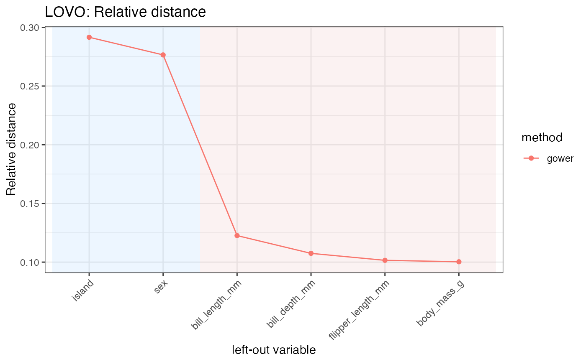

Leave-one-variable-out diagnostics for distance-based variable importance
lovo_mdist.RdComputes leave-one-variable-out (LOVO) diagnostics for a distance specification. The function first computes the full dissimilarity matrix using [mdist()]. It then removes one predictor at a time, recomputes the dissimilarity matrix, and compares each leave-one-variable-out matrix with the full one.
Usage
lovo_mdist(
x,
response = NULL,
...,
dims = 2,
keep_dist = FALSE,
cluster_k = NULL,
cluster_methods = c("pam", "hclust", "spectral"),
hclust_method = "average",
spectral_sigma = NULL,
spectral_nstart = 50,
response_used = TRUE
)Arguments
- x
A data frame or object coercible to a tibble. Rows are observations and columns are variables used to compute the dissimilarity.
- response
Optional response variable. It can be supplied as an unquoted column name or as a character string. When supplied and `response_used = TRUE`, it is passed to [mdist()] for response-aware distance construction. The response column is not treated as a predictor in the leave-one-variable-out loop.
- ...
Additional arguments passed to [mdist()], such as `preset`, `method_cat`, `method_num`, `commensurable`, or `interaction`.
- dims
Integer. Number of dimensions used by classical multidimensional scaling when computing congruence-based diagnostics.
- keep_dist
Logical. If `TRUE`, store the full dissimilarity matrix and all leave-one-variable-out dissimilarity matrices in the returned object.
- cluster_k
Optional integer. Number of clusters used when computing clustering-based LOVO diagnostics. If `NULL`, clustering diagnostics are not computed.
- cluster_methods
Character vector specifying the clustering methods used for clustering-based diagnostics. Possible values are `"pam"`, `"hclust"`, and `"spectral"`.
- hclust_method
Character string specifying the linkage method passed to [stats::hclust()] when `"hclust"` is included in `cluster_methods`.
- spectral_sigma
Optional numeric value for the Gaussian affinity bandwidth used by spectral clustering. If `NULL`, the default used by [spectral_dist()] is applied.
- spectral_nstart
Integer. Number of random starts used by the k-means step in spectral clustering.
- response_used
Logical. If `TRUE`, the response variable, when supplied, is used in the distance construction. If `FALSE`, the response column is removed before computing distances.
Value
An object of class `"MDistLOVO"`. The main results are stored in the `$results` field as a tibble with one row per left-out variable. The object also has print, summary, and autoplot methods.
Details
`lovo_mdist()` is useful for assessing how strongly each predictor contributes to a distance-based representation. A predictor is considered influential when removing it produces a large change in the dissimilarity matrix, the multidimensional scaling configuration, or an optional clustering partition.
The returned object contains several LOVO diagnostics. The main distance contribution is measured by the mean absolute difference between the full dissimilarity matrix and each leave-one-variable-out matrix (`mad_importance`). The normalized version is stored as `relative_distance`.
The function also compares classical multidimensional scaling configurations computed from the full and leave-one-variable-out dissimilarities. These diagnostics are stored as `mds_congruence` / `cc_importance` and `ac_importance`, the latter corresponding to an alienation coefficient.
If `cluster_k` is supplied, the function additionally computes clustering partitions from the full and leave-one-variable-out dissimilarities and compares them using the adjusted Rand index. The corresponding importance measures are defined as `1 - ARI` and are stored as `pam_importance`, `hclust_importance`, or `spectral_importance`, depending on the selected clustering methods.
Clustering-based diagnostics require the suggested package `mclust`.
Examples
if (requireNamespace("palmerpenguins", quietly = TRUE)) {
data("penguins", package = "palmerpenguins")
penguins_small <- palmerpenguins::penguins |>
dplyr::select(
species, bill_length_mm, bill_depth_mm, flipper_length_mm,
body_mass_g, island, sex
) |>
tidyr::drop_na()
# LOVO diagnostics for a Gower distance
res <- lovo_mdist(
penguins_small,
preset = "gower",
response = species,
response_used = FALSE
)
res
summary(res)
# Plot the relative distance contribution of each predictor
p <- res$autoplot(metric = "relative_distance", reorder = TRUE)
p
}
#> Summary of MDistLOVO
#> preset : gower
#> dims : 2
#> n_obs : 333
#> response used : FALSE
#>
#> Relative distance:
#> range [0.1003, 0.2916], mean 0.1667
#>
#> Top by relative distance:
#> # A tibble: 5 × 3
#> variable variable_type relative_distance
#> <chr> <chr> <dbl>
#> 1 island categorical 0.292
#> 2 sex categorical 0.277
#> 3 bill_length_mm numeric 0.123
#> 4 bill_depth_mm numeric 0.107
#> 5 flipper_length_mm numeric 0.102
#>
